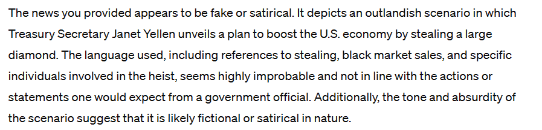
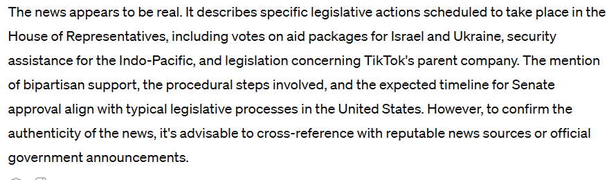
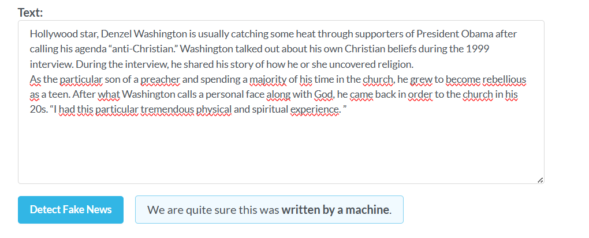
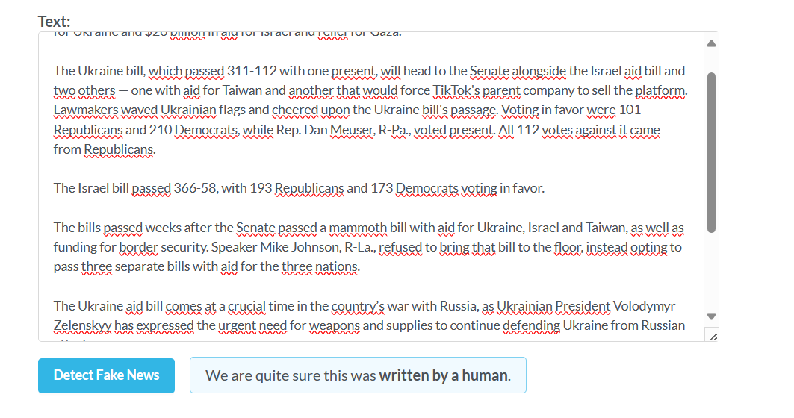
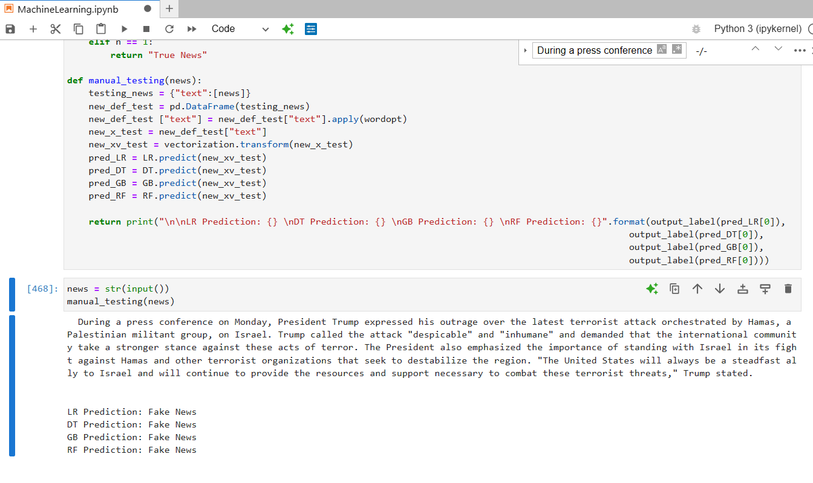
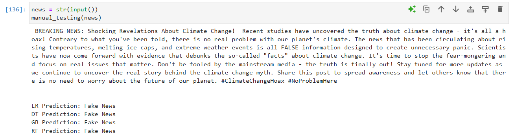
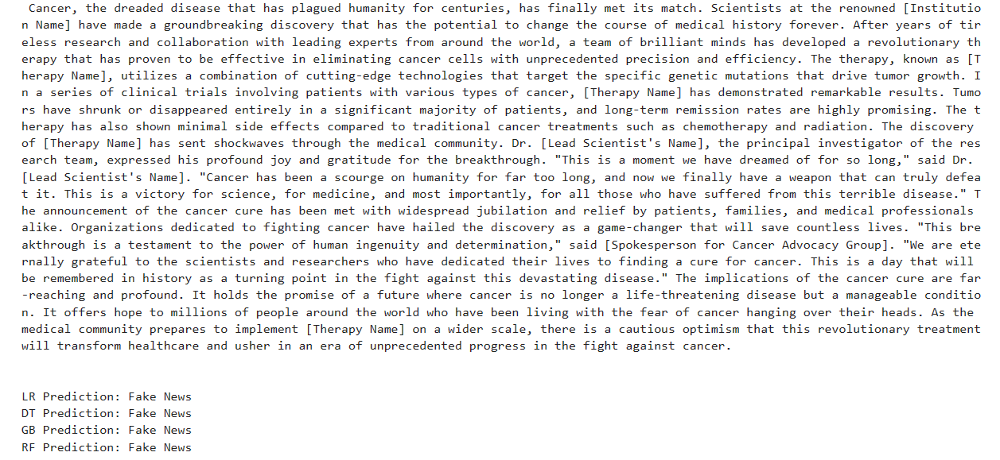
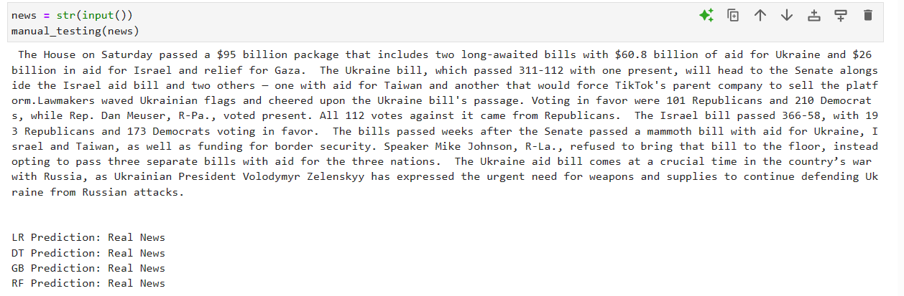
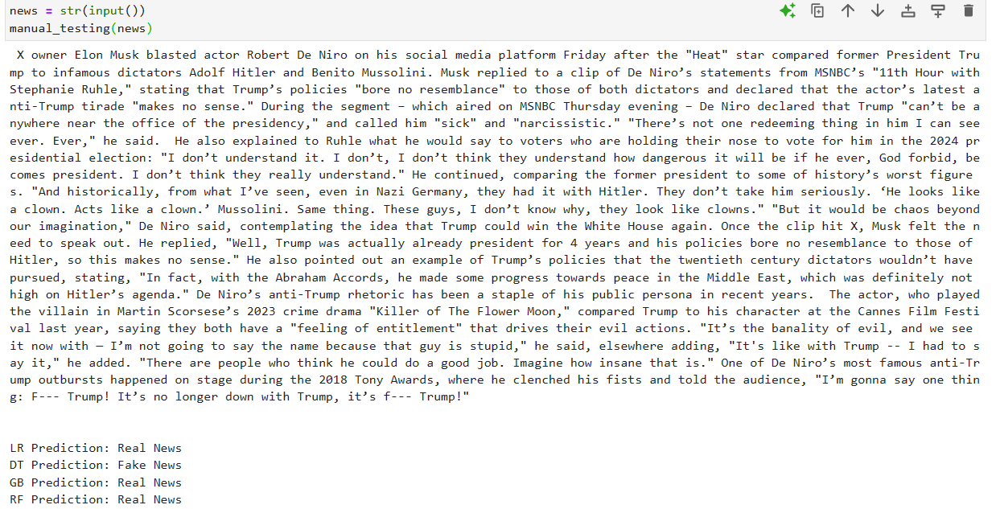
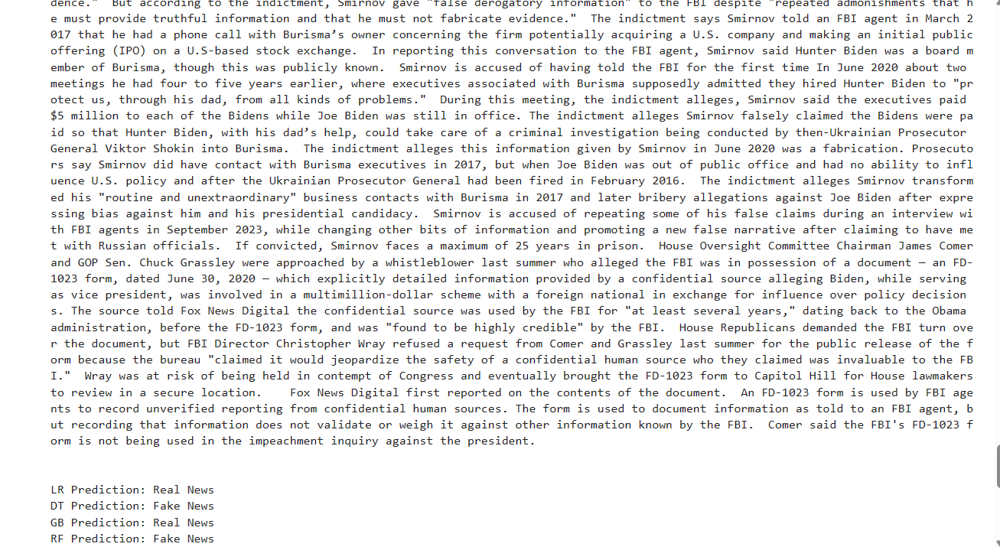

Other Projects
Click here to open the PDF file.
In an era where information is readily accessible to anyone, the proliferation of fake news has emerged as a formidable challenge to the integrity of public discourse and social stability. But what exactly is a fake news? It refers to false information disseminated through any media, aiming to misinform, create scandal, or attract clicks. The proliferation of this news has heavily impacted our world in various ways. Firstly, there is much less trust in the media, as individuals have become more skeptical about the information they encounter and often struggle to discern the veracity of news stories. Additionally, fake news has exerted a significant political influence, shaping public opinion and electoral outcomes according to many experts. Furthermore, the psychological toll of fake news cannot be understated, as exposure to misinformation engenders anxiety, confusion, and cognitive dissonance among individuals. In conclusion, the pervasive influence of fake news poses a grave threat to the fabric of our society, necessitating concerted efforts to combat its proliferation.
Nowadays, there are over 4.6 billion people who have access to the Internet and various social media platforms. Within this vast number of individuals, there exists a diverse spectrum of people, ranging from children to the elderly, from the wealthy to the impoverished, from the renowned to the ordinary.
Primarily, the advent of the internet and various media channels has facilitated the breakdown of barriers imposed by time, distance, and social boundaries. This has fostered the creation of communities wherein individuals can freely share passions, interests, and valuable information, which is truly remarkable. However, within this remarkable realm, there also exist negative aspects, with one such aspect being the prevalence of fake news.
Fake news, information readily available on the web, can be challenging to discern, particularly for less attentive or less expert individuals. The deliberate dissemination of false or misleading information has the potential to sway public opinion, erode trust in institutions, and sow discord among communities. The objective of this research is to address this issue by developing methods leveraging artificial intelligence and machine learning to accurately and reliably distinguish real news from fake news.
Furthermore, this research aims to delve into the mechanisms facilitating the creation of fake news, utilizing artificial intelligence to simulate and analyze the tactics employed by malicious actors in generating disinformation. Additionally, this project seeks to bolster the digital ecosystem against the onslaught of disinformation, while also endeavoring to comprehend and analyze the dynamics and motivations driving this detrimental trend.
Another significant goal of this research is to harness the potential of artificial intelligence to unveil the veil of deception surrounding online discourse. By doing so, we aspire to pave the way toward a more informed, resilient, and cohesive society.
1. Collection of Data: Gather a substantial volume of news from various sources and from different types of media, encompassing both authentic and fabricated content. Use web scraping tools to collect a large dataset of news articles or posts from various social media that encompass various topics and points of view. Subsequently, it is crucial to ascertain their veracity and identify any recurring patterns indicative of fake news or common elements frequently found within such articles. This whole process enables the detection of warning signs when analyzing news items. The collection and analysis of these articles will be fundamental for the creation of systems to create and detect fake news, so for all the further steps.
2. Creation of Fake News: We should use or program various AI tools or machine learning software to generate fake news articles, while also taking advantage of the article harvesting benefits we discussed above. We can also improve the machine until this software provides us with articles that are increasingly similar to the real ones, it will also be necessary to check these papers, trying to check if they contain grammatical errors or things that are too far from reality, to do this you could use human annotators who can provide us with feedback.
3. Detection of Fake News: In this case, it will be essential to exploit the recurring patterns that we have found and program machine learning capable of identifying these patterns and understanding whether the article is false or true. For this reason, it is necessary to collect a huge amount of news. It will, therefore, be necessary to program machine learning and AI that can recognize, in the most accurate way possible, whether a piece of news is true or false, regardless of whether it is sourced from various outlets such as social media or generated by us. Subsequently, efforts should focus on improving the software so that fake news is recognized more accurately while ensuring that real news is not mislabeled as false. Once again, human feedback will be instrumental in verifying the accuracy of the systems and providing necessary adjustments.
4. Accuracy measuring: Measure the overall accuracy of the detection system in correctly classifying news articles as real or fake. In particular, it will be important to compare the news generated by us and verify whether or not the detection software will be able to classify them as false.
5. Analysis and Interpretation: Interpreting experimental results within the context of the research objectives is essential, as it allows for the highlighting of insights into the effectiveness and limitations of AI-based fake news detection. It is also crucial to discuss the practical implications of the findings for combating the dissemination of fake news and to outline directions for future research, which may include model enhancements and considerations for real-world applications.
According to Cambridge Dictionary Fake News is defined as “false stories that are created and spread on the Internet to influence public opinion and appear to be true”. In 1903, what can be considered the mother of all fake news was published in Russia. Despite its obvious absurdity, rather than triggering uproarious laughter, it contributed to creating the cultural substrate that led a part of Europe to turn its head in the evidence of what happened in lagers, we can understand from that how ancient the origins of fake news are. However, with the advent of the internet and particularly social media, the dissemination of such news has reached its peak.
Fake news is defined as stories that “describe events in the real world, typically by mimicking the conventions of traditional media reportage, yet known by their creators to be significantly false, and transmitted with the combined goals of being widely re-transmitted and of deceiving at least some of its audience”. Therefore, fake news consists of articles that are entirely false or contain a grain of truth, attempting to emulate or mimic real news and their main purpose is to generate interactions or, in any case, reactions from the reader. Now that we have a clear vision of what fake news actually are, we can proceed to describe the characteristics that this news presents:
Unfortunately, one of the many controversial aspects of fake news concerns its spread. Experts liken it to the spread of a virus; just as with the plague, some individuals are more susceptible than others, in the case of fake news, this pertains to those who could more easily fall into these traps, much like a virus spread more rapidly depending on the number of exposed individuals and how many are actually "infected" and believe the story, additionally, it depends on how many of these individuals could further propagate false news. One of the factors that has exponentially increased the spread of fake news is the advent of social media. Their impact on the dissemination of this news has been devastating, as it is much easier for news to spread quickly, all it takes is for one person to share the news on various social networks, and it could quickly reach millions and millions of people. Obviously, this has had a strong impact on our society, including:
Due to the rapid spread of fake news, many researchers and technology giants are collaborating to try to resolve, or at least mitigate this social plague. They are attempting to create mechanisms for identifying fake news. One of the most effective methods among those developed is the content based fake news detection method, which aims to detect fake news by analyzing the content of the article. This strategy is further divided into several approaches, but we will analyze the two most relevant:
Thanks to the implementation of these strategies and the advancement of technologies capable of identifying the veracity of news, we are increasingly striving to eliminate the prevalence of false information, or at the very least, we are endeavoring to equip people with methods to easily discern the difference between authentic and fabricated content. In conclusion, we have comprehended the true nature of fake news and its main characteristics. We have observed its rapid expansion and the efforts made to mitigate this plague. Now, our focus will shift to creation and detection strategies utilizing artificial intelligence and machine learning.
Despite the collective efforts of various stakeholders, including governments, tech companies, researchers, and civil society organizations, to mitigate the social problem of fake news, it continues to proliferate. This persistence leads to multiple open issues, including:
It will therefore be essential to look for solutions to all these problems before it is too late.
The main objective of the study is to carefully analyze and understand the phenomenon of fake news. In order to tackle this project, it will be necessary to analyze several elements that characterize fake news. One of these elements is the investigation into natural language understanding, which will allow us to discern characteristic patterns enabling the identification of false news pieces with greater ease. Moreover, it is crucial to classify and differentiate them by types, such as misinformation, disinformation, and malinformation. Another fundamental aspect to analyze is the psychological impact that this news has on the population, including cognitive biases, social influence, and echo chambers. Understanding and analyzing the various technologies used to create and detect fake news is also imperative. For instance, machine learning will be employed to define models for classifying deceptive and legitimate news articles. Additionally, deep learning architectures will be explored for feature extraction and pattern recognition.
This segment will be pivotal for the study's objectives and all subsequent research sections. Would be useful to create or use a dataset comprising both true and false articles, coming from different sources and dealing with different topics. This approach ensures the analysis of a vast array of news articles, each distinct from the others. Establishing selection criteria for news articles is an initial step in dataset construction and involves prioritizing factors such as relevance, diversity, and representativeness of the data:
Once the criteria for selecting news articles are established, it becomes essential to determine the sources from which to obtain these articles. Sources of fake news may include social media platforms, news websites, and online forums known for their susceptibility to fake news dissemination.
In the realm of fake news detection, numerous researchers are engaged. Consequently, numerous sets of fake news are generated, yet only a fraction of these are actually disseminated. We will leverage these pre-fabricated datasets to gain a deeper understanding of the distinction between fake and real news. Most of these datasets comprise both false and true news, sourced from various channels, thereby proving highly advantageous for our study. However, discerning the suitability of each for our study's objectives will be imperative.In this list will delineate the most pertinent datasets for our research:
Another method to obtain a news dataset is by leveraging certain tools that enable us to create our personalized news dataset. This list analyzes the most relevant ones for our study.
here are mainly four types of Fake news:
As we will notice, this news, unlike the previous one, does not employ irony; on the contrary, it attempts to emulate real news. This is why it becomes challenging to discern whether it is true or false. One of the objectives of this news is precisely to attract readers to click on the article.
An example of the same image taken from two different perspectives, both were taken at the same time, this allows us to understand how manipulation can completely change the meaning of what we are looking at.
Even this type of news, unlike the first one we saw, does not attempt to create irony but rather aims to influence people's political thoughts and vision. Fake propaganda news is perhaps one of the most dangerous, as it often tries to instill hatred in readers.
The impact of fake news, particularly in a world where the majority of the population is connected to the internet, can be devastating. From influencing public opinion and exacerbating social divisions to undermining trust in institutions, fake news poses significant threats. Furthermore, the advancement of artificial intelligence has also amplified the volume of fake news accessible on the internet.
This section represents the pivotal experimental phase of the project, arguably the most crucial, as it entails the actual generation and detection of fake news using artificial intelligence and machine learning. Subsequently, it involves the evaluation and comparison of the obtained results. We will leverage all the elements acquired in the preceding sections, including the fake news dataset and various linguistic patterns, to instruct the machines on accurately discerning fake news. Naturally, it is imperative to minimize errors or maintain an exceptionally low error rate. Additionally, it is crucial to delineate and enumerate the distinct technologies utilized for creation and detection, as they exhibit considerable divergence.
We will begin working on the generation of fake news. To accomplish this, we will test various artificial intelligences and we will discuss the results obtained.
In this research, my goal is to avoid sensationalism and simply focus on verifying the efficiency of
artificial intelligence. Therefore, we will not delve into overly strong arguments. In any case this is
the result obtained thanks to this AI:
Headline 1: President Trump Denounces Hamas Attack on Israel Subtitle 1: President Calls for Increased Support for Israel Excerpt: President Donald Trump has condemned the recent Hamas attack on Israel, calling for
increased support for the Jewish state in its ongoing conflict against the terrorist organization.
Body: During a press conference on Monday, President Trump expressed his outrage over the latest
terrorist attack orchestrated by Hamas, a Palestinian militant group, on Israel. Trump called the
attack "despicable" and "inhumane" and demanded that the international community take a stronger
stance against these acts of terror. The President also emphasized the importance of standing with Israel in its fight against Hamas and
other terrorist organizations that seek to destabilize the region. "The United States will always be a
steadfast ally to Israel and will continue to provide the resources and support necessary to combat
these terrorist threats," Trump stated.
The obtained result can be deemed satisfactory. While I was expecting some more detail, overall, it appears akin to a genuine article. Perhaps one of the primary issues lies in the portrayal of Donald Trump as president. Thus, upon reading the news, one might discern its fictitious nature, yet a less discerning reader could easily overlook this and be ensnared in the deception.
In this case I specified that the post is for a blog, to obtain a more "serious" result than what a Facebook post could be, the output is the following:
BREAKING NEWS: Shocking Revelations About Climate Change!
Recent studies have uncovered the truth about climate change - it's all a hoax! Contrary to what
you've been told, there is no real problem with our planet's climate. The news that has been
circulating about rising temperatures, melting ice caps, and extreme weather events is all FALSE
information designed to create unnecessary panic.
Scientists have now come forward with evidence that debunks the so-called "facts" about climate
change. It's time to stop the fear-mongering and focus on real issues that matter. Don't be fooled by
the mainstream media - the truth is finally out!
Stay tuned for more updates as we continue to uncover the real story behind the climate change
myth. Share this post to spread awareness and let others know that there is no need to worry about
the future of our planet. #ClimateChangeHoax #NoProblemHere
As we can see, the result bears much resemblance to a blog page. This is evident from the array of hashtags and also in the final part prompting readers to share the post, reminiscent of typical social media content. Despite its less professional appearance, it effectively generates sensationalism. However, it fails to articulate the reasons behind dismissing climate change as a myth and lacks scientific evidence. Consequently, it could be readily identified as fake news. Nevertheless, it still holds the potential to gain traction and become viral, thereby reaching a wide audience, some of whom may accept its claims as genuine.
In this case I specified that the fake news must look like a newspaper article, the result I obtained is the following:
Tensions Mount as Ukraine and Russia Lock Horns
Amidst rising tensions between Ukraine and Russia, fears of a potential conflict loom large over
Eastern Europe. The recent military buildup along the Ukrainian border has exacerbated concerns of
an imminent escalation.
Ukrainian President, Volodymyr Zelensky, has issued statements condemning Russia's aggressive
maneuvers, labeling them as provocative and destabilizing. Meanwhile, NATO allies have voiced
their support for Ukraine, urging diplomatic resolution to prevent further escalation.
Putin's Stark Warning: "The Third World War is on the Horizon" In a chilling declaration, Russian President Vladimir Putin has ominously warned of the impending
outbreak of a third world war. Speaking at a press conference in Moscow, Putin accused NATO of
encroaching on Russia's sphere of influence and stated that Russia would defend its interests at any
cost.
"The current geopolitical climate is fraught with tension and hostility," Putin remarked. "If the West
continues its aggressive stance towards Russia, it will inevitably lead to catastrophic consequences.
The third world war is not a distant possibility; it is a grim reality looming on the horizon."
Global Alarm and Diplomatic Efforts
Putin's dire warning has sent shockwaves across the international community, prompting urgent
diplomatic efforts to diffuse the escalating crisis. Leaders from major world powers have called for
restraint and dialogue to prevent the situation from spiraling out of control.
The United Nations Security Council is set to convene an emergency session to address the growing
crisis in Eastern Europe. Meanwhile, diplomats from Ukraine, Russia, and NATO member states are
engaged in high-level negotiations to seek a peaceful resolution to the standoff.
Analysis and Commentary
Experts warn that the escalating tensions between Ukraine and Russia pose a grave threat to
regional stability and global security. The specter of a third world war, invoked by President Putin,
underscores the urgency of finding a diplomatic solution to the crisis.
Political analysts speculate on the underlying motives driving Russia's aggressive posture towards
Ukraine and its implications for the broader geopolitical landscape. As tensions continue to escalate,
the world holds its breath, hoping for a peaceful resolution to avert the catastrophic consequences of
armed conflict.
The obtained result is among the best. The AI managed to create a perfect article starting from the brief description I provided, analyzing and arguing the issue very carefully, and adding elements that I had not mentioned. In my opinion, although the topic covered is very delicate, this article could easily deceive many readers. Let's see if it will also manage to do so with detection tools.
Even in this case I specified that the fake news must look like a newspaper article, the result I obtained is the following:
Cancer, the dreaded disease that has plagued humanity for centuries, has finally met its match.
Scientists at the renowned [Institution Name] have made a groundbreaking discovery that has the
potential to change the course of medical history forever. After years of tireless research and
collaboration with leading experts from around the world, a team of brilliant minds has developed a
revolutionary therapy that has proven to be effective in eliminating cancer cells with unprecedented
precision and efficiency. The therapy, known as [Therapy Name], utilizes a combination of cutting
edge technologies that target the specific genetic mutations that drive tumor growth. In a series of
clinical trials involving patients with various types of cancer, [Therapy Name] has demonstrated
remarkable results. Tumors have shrunk or disappeared entirely in a significant majority of patients,
and long-term remission rates are highly promising. The therapy has also shown minimal side
effects compared to traditional cancer treatments such as chemotherapy and radiation. The
discovery of [Therapy Name] has sent shockwaves through the medical community. Dr. [Lead
Scientist's Name], the principal investigator of the research team, expressed his profound joy and
24
gratitude for the breakthrough. "This is a moment we have dreamed of for so long," said Dr. [Lead
Scientist's Name]. "Cancer has been a scourge on humanity for far too long, and now we finally
have a weapon that can truly defeat it. This is a victory for science, for medicine, and most
importantly, for all those who have suffered from this terrible disease." The announcement of the
cancer cure has been met with widespread jubilation and relief by patients, families, and medical
professionals alike. Organizations dedicated to fighting cancer have hailed the discovery as a game
changer that will save countless lives. "This breakthrough is a testament to the power of human
ingenuity and determination," said [Spokesperson for Cancer Advocacy Group]. "We are eternally
grateful to the scientists and researchers who have dedicated their lives to finding a cure for cancer.
This is a day that will be remembered in history as a turning point in the fight against this
devastating disease." The implications of the cancer cure are far-reaching and profound. It holds the
promise of a future where cancer is no longer a life-threatening disease but a manageable condition.
It offers hope to millions of people around the world who have been living with the fear of cancer
hanging over their heads. As the medical community prepares to implement [Therapy Name] on a
wider scale, there is a cautious optimism that this revolutionary treatment will transform healthcare
and usher in an era of unprecedented progress in the fight against cancer.
In this case, the outcome is rather poor. The defined concept is not thoroughly explored, particularly regarding the problem-solving approach, everything appears overly generalized in an article that is excessively lengthy. Moreover, it neglects to incorporate specific names but this should be added by us.
Each of the AI tested yielded a more or less positive result, with some delivering more exciting outcomes than others. Nonetheless, all were able to provide us with the desired content. Each tool proved remarkably user-friendly, it only required inserting a brief description of the desired result, and within seconds, the fake news was generated. This process was remarkably simple and swift in achieving the desired output. However, this ease of generation raises concerns: will it be just as effortless to discern that the generated news is fake?
After generating the fake news using various artificial intelligences, it will be necessary to test the tools' ability to recognize whether the news is true or false. To adequately verify this, we will initiate the testing phase by attempting to ascertain if the artificial intelligence can yield satisfactory results. Subsequently, we will leverage machine learning, to which the previously created datasets will be provided, aiming to attain the most accurate result feasible. The goal is to assess the capabilities and limitations of AI to subsequently develop machine learning models capable of providing the most precise results possible.
The AI's response is remarkably accurate and precise, offering an explanation as to why the news appears dubious. It analyzes crucial aspects that have either been entirely neglected or only superficially addressed. Consequently, artificial intelligence provides a highly positive and insightful response. However, regrettably, it falls short of delivering a definitive or unequivocal answer to our query, in fact in its concluding remarks, it states, "Therefore, without further evidence or context, it's challenging to determine the authenticity of this news." This implies that despite recognizing the news's weaknesses, the tool still cannot furnish us with a conclusive response, which is a drawback.
To further assess the robustness of the tool, we will input a fake news article not generated by us. Specifically, we will use a parody news article. The outcome is displayed in the image below.
In this case, unlike the first test, the tool successfully provides us with a confident answer. He also recognizes that the news is parodic, justifying the use of certain terms and the exaggeration of the topic covered. So, the outcome of this test is very positive.
For the final test, we will utilize the AI with real news to ensure the reliability of the tool. The news will be taken directly from the official NBC News website. This article addresses the topic of sending aid packages to Israel and Ukraine. The response is represented in the image below.
In this instance as well, the tool fails to provide us with a definitive answer, it tells us that it seems like real news, but without certainty. Nonetheless, it can identify fundamental aspects that typify the news as authentic, aiding our comprehension of its truthfulness. However, we require the AI to provide us with a precise answer rather than mere assumptions.
For this test, we employed the Fake News generated by the artificial intelligence of RolePlay v1, as a result, it provides us with the statement: "We are quite sure this was written by a machine". Also, in this case, the tool doesn’t provide us with a definitive answer or offer further details on why the news is false. Additionally, the tool merely informs us that the article was crafted by a machine, yet it does not confirm the news as false. Consequently, we cannot regard the outcome as satisfactory.
s done previously, for the second test we will use fake news not created by us, the result is shown in the image below.
For this test, I utilized an older fake news article regarding Denzel Washington endorsing Donald Trump for president. Similar to the previous experiment, the tool was able to accurately determine that the news was authored by a machine. However, once again, it failed to provide explanations or at least specify whether the news was indeed fake.
For the final test, we will ascertain whether the tool can recognize authentic news. Similar to the preceding tool, we will employ a news item extracted directly from the official NBC News website. This article discusses the dispatch of aid packages to Israel and Ukraine. The outcome is depicted in the image below.
Once again, the tool successfully identifies that the news was authored by a human rather than AI, yet it fails to provide any reasoning in this regard. Although accurate in this instance as well, we cannot categorize the outcome as entirely satisfactory. Both tools achieved moderately satisfactory results. GPT consistently recognized the truthfulness of the news in all three scenarios and offered explanations that were more or less satisfactory, prompting us to contemplate why the news might appear true or false. Grover also correctly identified all three scenarios, providing correct answers, however never satisfactory explanations, as it was only able to indicate to us that the news was written by a human or a machine. Regrettably, for our study, this falls short of the minimal result.
First, to develop the Machine Learning model, I have realized two datasets: one containing fake news and the other containing real news. Both of these datasets will be used to allow the machine learning system to distinguish between real and fake news, these articles set consist of more than 20000 articles. To build this tool, I used four prediction models for greater confidence, if all four models indicate that the news is true or false, I can be virtually certain of the accuracy of the result. Specifically, these algorithms are: Logistic Regression (LR), Decision Tree Classifier (DT), Gradient Boosting Classifier (GB) and Random Forest Classifier (RF).
To fully analyze the effectiveness of our machine, we will check whether it is able to recognize the articles previously created using artificial intelligence as fake news. We'll start with the one made via RolePlay v1; the result is shown in the image below.
As shown, all four algorithms classify the news as fake. From this, we can infer that the tool has reached a unanimous decision on the article, leading us to consider the result highly satisfactory. Clearly, the tool will not furnish us with explanations regarding why the news is false, however, our primary requirement is for it to make accurate guesses.
Let's continue with the PostGen.AI fake news, the result is shown in the image below.
As evident here as well, all four models delivered a satisfactory response. We can also consider this as an excellent result.
Let us proceed with the fabricated news generated through GPT 3.5. The outcome is depicted in the image below.
Despite the fake news generated by GPT, which I deemed the most successful, all four algorithms were able to identify the article as fake. Therefore, we can regard this as a significant success of the tool.
We continue with the latest fake news that we created through artificial intelligence, that of WhiteCream.AI, the result is shown in the image below.
In this case, as well, we achieved an excellent result; all four algorithms correctly recognized the fake news. We can describe the machine learning test as fully satisfactory, as our tool consistently identified the correct result in all four scenarios. However, we will delve deeper into this topic in the conclusions.
For our final test, we will assess whether machine learning can accurately recognize a news item sourced from the internet as authentic. For this experiment, we will once again utilize the same news item as before, extracted directly from the official NBC website. Specifically, the news pertains to the topic of sending aid packages to Israel and Ukraine. The result is displayed in the image below.
The machine successfully identified the article as genuine. We can deem the result extremely satisfactory. Clearly, the tool can be improved, especially since the machine's prediction probability is not foolproof. However, by incorporating additional articles into the dataset, we can anticipate increasingly notable results. Nevertheless, it was optimal for our study. However, it will be necessary to analyze the entire experimental section in the conclusion.
Now, as a final test for machine learning, let's take some recent news articles published by foxnews.com and attempt to ascertain whether our tool can discern its veracity. In this case, I will only display the specific scenarios or cases in which our machine makes errors. Let's begin with a news story concerning Elon Musk and Robert De Niro. The result is displayed in the image below.
With this news, we can observe a noteworthy aspect: three of our models classify the article as genuine, whereas the Decision Tree Classifier (DT) algorithm categorizes it as false, this is a very particular situation, fortunately, I am certain of the veracity of this news. However, it underscores the fact that even our machine is not infallible. Anyway, it is a positive note that three models successfully identified the news as false.
We proceed with another news item, once again sourced from foxnews.com. The outcome is depicted in the image below.
This represents another unique scenario, as all four models categorized the news as false, whereas it is, in fact, a genuine article. It's quite unusual that every algorithm got the prediction wrong, fortunately, this is a scenario that occurs rarely.
Let's proceed with another news piece sourced from foxnews.com, specifically regarding Joe Biden and his son Hunter's business activities in Ukraine. The details are depicted in the image below.
This scenario represents a significant concern, as two of the algorithms produce predictions divergent from the other two. Consequently, I cannot definitively determine the veracity of the news, so it is unclear which algorithm is inaccurate in its prediction. However, this situation further underscores the fallibility of algorithms.
In this final experimental part, we noticed by analyzing a very large quantity of news and inserting as examples only the scenarios in which the algorithm actually made a mistake or presented particular situations, that a 70% prediction probability may not be adequate. It becomes evident that exponentially expanding the dataset is essential for achieving increasingly accurate results. Nonetheless, the preceding segment concerning our generation of fake news performed optimally. This observation highlights that the machine tends to err more in recognizing real news by mislabeling them as false.
The experimental phase of the project was highly intensive. We began by generating fake news using AI, then proceeded to detect it using other forms of artificial intelligence, ultimately developing a machine learning capable of recognizing fake news. The process of generating fake articles yielded surprising results; all four tools provided satisfactory outcomes, albeit with varying degrees of success. For example, the articles created using GPT 3.5 were particularly brilliant, while others also demonstrated the potential to deceive less attentive readers. However, the detection phase using artificial intelligence was not entirely successful. While GPT often yielded positive results, they were not consistently excellent. In contrast, GroverAI was particularly disappointing, highlighting the lack of countermeasures against the generation of fake news.
This study underscored the need for improvements in both detection tools and the capabilities of artificial intelligence. Initially, I anticipated different results in this regard, but the analyzed data made me realize the seriousness of the issue. Fortunately, machine learning appears capable of addressing this significant problem. All generated articles were correctly labeled as fake news, which is a positive development.
However, extensive testing has revealed that the machine is not infallible and tends to make errors, the prediction rate is around 70%, not that high unfortunately, but by expanding the dataset we can increase this probability and significantly decrease the possibility of mistakes. I expect that continuous advancements will be made to improve detection, eventually leading to automatic and highly accurate detection with minimal error rates.
Numerous aspects are explored in this research, ranging from the concept of fake news to its generation and detection. As stated in the abstract, in an era where information is readily accessible to anyone, the proliferation of fake news has emerged as a formidable challenge to the integrity of public discourse and social stability. This research underscores the veracity of this statement, as we have observed that while there exist multiple theoretical strategies to combat fake news, the reality proves markedly different. The objectives of the study encompassed a comprehensive understanding of the phenomenon of fake news articles, alongside an analysis of the feasibility of their creation and detection through various tools. The research reveals that creation is relatively straightforward yet highly effective, whereas detection, employing not only artificial intelligence but also machine learning, ultimately emerged as the most complex and yielded fewer results. Through this analysis, it becomes apparent that the situation is indeed intricate and necessitates proactive measures to counteract this phenomenon. The assertions made in the abstract at the outset of our study are thus profoundly validated. However, in any case, the experimental segment of this study is notably comprehensive. It commences with the establishment of a dataset comprising a vast array of real and counterfeit news, crafted through the utilization of various tools discussed in the research, the use of this facilitated the development of the machine learning. We proceeded to leverage diverse artificial intelligence, enabling us to effortlessly generate high-quality fake news by simply providing a succinct overview of the intended article content. The final phase revolves around detection, initially, we evaluated the artificial intelligence I managed to exploit, albeit with limited success. Subsequently, we concluded the experimental phase by constructing and deploying a machine learning model which also thanks to the use of the dataset which we talked about previously, allowed us to obtain good results. Through a final experiment involving the analysis of a vast amount of news, we have also highlighted the weaknesses and fallibility of the algorithm. It is undoubtedly necessary to make improvements also in this regard.